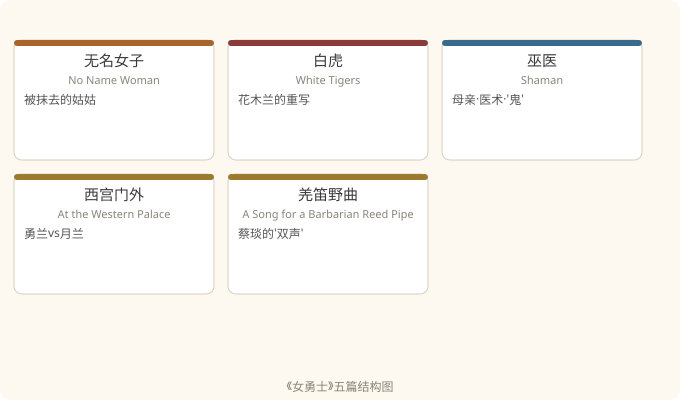

女勇士
一、基本信息
| 作者 | 汤亭亭 |
|---|---|
| 成书/出版 | 1976年出版（Britannica） Maxine Hong Kingston — Encyclopaedia Britannica（百科全书） |
| 国别/地区 | 美国 |
| 时代 | 现当代 · 20世纪 |
| 体裁 | 回忆录/小说（混合文体） |
| 语言 | 英语 |

《女勇士》五篇结构图（主题·结构图）
二、创作背景
文体（Britannica 语境）：'blending myth, family history, and folktales'（融合神话、家族史与民间故事）——自传/小说/神话的边界消融。
五篇结构：《无名女子》《白虎》《巫医》《西宫门外》《羌笛野曲》——中国传说与美国生活的'双写'（通说）。
三、内容脉络
'无名女子'：被家族抹去的姑姑——'你不许告诉任何人'与'我们'的沉默（通说）。
'白虎'：花木兰故事的重写——'我们继承了战神韩信'（通说待核）——'女勇士'的神话化。
'羌笛野曲'：以蔡琰《胡笳十八拍》收束——'把两种声音翻译成一种'（通说待核）。
四、主要人物表
| 人物 | 身份 | 说明 |
|---|---|---|
| '我'（Maxine） | 华裔美国女孩 | '双重身份'的叙述者 |
| 勇兰（Brave Orchid） | 母亲 | '巫医'与'讲鬼故事者'——中国的'幽灵'传统 |
| 花木兰/无名女子 | 神话与现实 | '女勇士'的两面 |
五、主题与艺术特点
- 沉默与开口：中国女性'被沉默'与美国'开口'的张力（通说）。
- '鬼'的多义：中国人（'鬼佬'）与美国华裔的'双鬼'——他者化（通说）。
- 神话与现实：花木兰的'改写'作为女性力量的赋予（通说）。
- 艺术特点：五篇独立而呼应、'真实/虚构/神话'的边界消融。
六、影响与评论
- Britannica（Kingston 条）：The Woman Warrior (1976) won the National Book Critics' Circle Award。
Maxine Hong Kingston — Encyclopaedia Britannica（百科全书） - 亚裔美国文学的经典：与谭恩美、赵健秀并列（通说待核）。
Maxine Hong Kingston — Encyclopaedia Britannica（百科全书） - 中译：张子清译《女勇士》（漓江出版社，通说待核）。
Maxine Hong Kingston — Encyclopaedia Britannica（百科全书）
七、阅读建议
难点
- '真实/虚构'的边界——理解'创造性非虚构'。
- 中国民间故事与传说的嵌入——注释。
- 张子清译《女勇士》（漓江出版社，通说待核）。
- 英文本：Vintage International（通说待核）。
通读五篇 → 精读'无名女子'与'白虎' → 讨论'沉默与开口'。
八、待核实
- 1976年 Knopf 出版细节待核。
- 张子清译本信息待核。
- 五篇原题与中译对照待核。
本页主要来源
汤亭亭的其他收录作品：女勇士